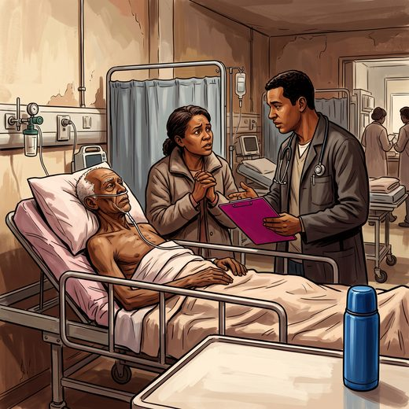

Consulta rápida à beira do leito
Condutas, doses e interações.
Referências da aula · 10
- Chang YK, Philip J, van der Steen JT, et al. Referral criteria for specialist palliative care for patients with dementia: an international Delphi consensus. JAMA Netw Open. 2025;8(5):e2510298. doi:10.1001/jamanetworkopen.2025.10298.DOI
- Kon AA, et al. Defining futile and potentially inappropriate interventions: a policy statement from the Society of Critical Care Medicine Ethics Committee. Crit Care Med. 2016;44(9):1769-74. PMID 27525995. doi:10.1097/CCM.0000000000001965.PubMedDOI
- Schneiderman LJ, Jecker NS, Jonsen AR. Medical futility: its meaning and ethical implications. Ann Intern Med. 1990;112(12):949-54. PMID 2187394. doi:10.7326/0003-4819-112-12-949.PubMedDOI
- Mitchell SL, Teno JM, Kiely DK, et al. The clinical course of advanced dementia. N Engl J Med. 2009;361(16):1529-38. PMID 19828530. doi:10.1056/NEJMoa0902234.PubMedDOI
- Finucane TE, Christmas C, Travis K. Tube feeding in patients with advanced dementia: a review of the evidence. JAMA. 1999;282(14):1365-70. PMID 10527184. doi:10.1001/jama.282.14.1365.PubMedDOI
- American Geriatrics Society Ethics Committee and Clinical Practice and Models of Care Committee. American Geriatrics Society feeding tubes in advanced dementia position statement. J Am Geriatr Soc. 2014;62(8):1590-3. PMID 25039796. doi:10.1111/jgs.12924.PubMedDOI
- Radbruch L, De Lima L, Knaul F, et al. Redefining palliative care: a new consensus-based definition. J Pain Symptom Manage. 2020;60(4):754-64. PMID 32387576. doi:10.1016/j.jpainsymman.2020.04.027.PubMedDOI
- Murray SA, Kendall M, Boyd K, Sheikh A. Illness trajectories and palliative care. BMJ. 2005;330(7498):1007-11. PMID 15860828. doi:10.1136/bmj.330.7498.1007.PubMedDOI
- Baile WF, Buckman R, Lenzi R, et al. SPIKES: a six-step protocol for delivering bad news. Oncologist. 2000;5(4):302-11. PMID 10964998. doi:10.1634/theoncologist.5-4-302.PubMedDOI
- Conselho Federal de Medicina. Resolução CFM nº 2.217/2018 (Código de Ética Médica) e Resolução CFM nº 1.805/2006.
Documentos oficiais
Leis e publicações do Ministério da Saúde sobre o cuidado da pessoa idosa, de acesso livre.
Abrir os documentos